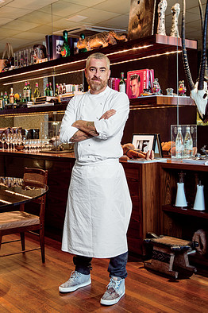

The Year of Cooking Dangerously
Straight off a december red-eye from the Amazon, Alex Atala is back home, sitting at the buffed ipê wood bar of his São Paulo restaurant D.O.M.—rated the best on the continent and fourth best in the world—talking about the time he was kidnapped.
“In the Amazon”, says Atala, who is 44 and freshly sunburned, with tightly cropped gray hair, countless tattoos and a graying red beard that resembles van Gogh's, “this kind of thing can happen.” It was 1998, the year before D.O.M.'s inception, and Atala had embarked on a fishing trip in the Amazonian state of Mato Grosso. The first week on the upper Araguaia River passed like an idyll. Butterflies lined the shore; pirarucu, some of the largest freshwater fish in the world swam alongside the boat. A friend was shooting footage for a proposed television program. After several days on the river, and passage into increasingly remote territory, the cameraman asked his native guides what they wanted in return for appearing on tape; they requested, and soon received, a new outboard motor. “The problem,” says Atala, “is there's a lot of jealousy between tribes. You buy a beautiful brand-new motor for one, and the others get angry.”
When his cameraman was taken into captivity and Atala himself was held at gunpoint by the jealous tribe, a .22 aimed at his heart, he was afraid, but also equipped to handle what came next. Even though he grew up in São Paulo, in the blue-collar district of São Bernardo do Campo, Atala spent a considerable amount of time exploring tucked-away corners of Brazil with his family by car. His mother, Otavia, worked as a dressmaker and his father, Milad, in a factory that made compression stockings. After several neighbors were caught in a fire, Atala's parents combined skills to manufacture dressings for burn victims. “We were unusual,” he says. “Everybody else went to the beach, but my father always loved places that were really wild.” So, while his cameraman was held hostage, Atala was forced back onto the river to procure a second outboard motor. “I was under huge pressure,” he says, his dark eyes narrowing to a wince. “I tried to go as fast as I could. It took a couple days, and I only slept a couple hours. I had to stop because the river was low and impossible to navigate in the darkness with all the sandbanks, all the rocks.”
Since delivering the motor and freeing his captured companion, Atala has never turned away from the Amazon. His intense lifelong connection to Brazil's massive rainforest—the Amazon is bigger than all of Western Europe—and his ability to navigate its many pitfalls have fundamentally propelled D.O.M.'s success. Having entered the prestigious World's 50 Best Restaurants rankings—sponsored by San Pellegrino and voted on by more than 800 industry insiders—at number 50 in 2006, it has since moved up 46 spots, now trailing only René Redzepi's Noma and two restaurants in Spain. That forward momentum is largely owed to Atala's treating the most biodiverse region in the world as his pantry.
The result is a singular cuisine, one that speaks to both indigenous ways and modern techniques. Dishes at D.O.M. have a way of feeling both out of time and of the moment: contemporary high-end dining with exploitation-free and sustainable Amazonian tribal roots. There are insects on the menu at D.O.M., burnished like jewels. A vibrant yellow sauce called tucupi must be boiled for 20 minutes to eliminate its lingering natural toxicity. One dish features spicy-tart flowers served over ice.
“I feel responsible for helping to show what Brazilian ingredients can do,” says Atala. And the way he does it is eye-opening, maybe the last, best gastronomic shock on the planet. “I had never experienced so many of the flavors and ingredients that Alex plays with,” says Daniel Humm of New York's esteemed Eleven Madison Park. “It makes for a cuisine unlike anything I've ever seen in my life.” Momofuku kingpin David Chang recalls a recent dish of Atala's involving a coconut apple and seaweed. A coconut apple is the spongy mass that grows inside a germinated coconut, and it's not typically consumed; nevertheless, Atala slices it and pairs it with seaweed, giving the dish the flavor, he says, of a beach after a storm—which is exactly what it tastes like. “It was the best first course I've had in years,” says Chang. “In a nutshell, it explains the emotion behind Alex's cooking. It's something nobody ever appreciated that he's made brilliant.”